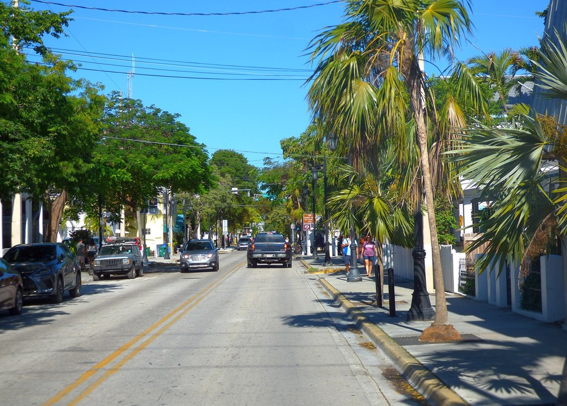

Adults-only guesthouse
The Marquesa
Restored historic houses around pools and gardens in Old Town, with its own restaurant, Hot Tin Roof. Quiet, romantic and walkable.
Official details for The MarquesaThe end of the road. The start of Pan Am.
Palm-lined streets, Victorian guesthouses, sunsets over the Gulf and the town where Pan American Airways sold its first tickets. Key West is the longest flight in this collection, so it shines as a longer stay.

Time illustration: direct distance at 150 KTAS plus 15 minutes for departure and arrival, matching the discovery page. At about four hours from KMYR, most piston aircraft will need a fuel stop. The route includes long stretches over water. Use ForeFlight for your actual flight plan.
Check the weekend weather at both ends → Flight category, your minimums and the crosswind on the best runway.
KEYW, Key West International, is a towered airline airport at the end of the Keys, with restricted and military airspace nearby (Naval Air Station Key West).
3471 S. Roosevelt Blvd., Key West, FL 33040
Signature is the only FBO, and Key West is among the more expensive stops in this collection. Recent pilot reports describe 100LL above $11 a gallon, overnight parking around $125 a night for a single-engine aircraft and a hefty fee for departures after the FBO closes at 9 PM. Confirm every fee before you go; no live price is shown.
Review restricted and warning areas, NAS Key West traffic, overwater equipment (life vests, raft) and any special procedures for flights along the Keys. A fuel stop on the mainland is the norm.
Adults-only guesthouses are Key West’s sweet spot for couples. Rates and availability need travel dates; winter is peak season.
Restored historic houses around pools and gardens in Old Town, with its own restaurant, Hot Tin Roof. Quiet, romantic and walkable.
Official details for The MarquesaA historic 1920s grand hotel on its own beach, now part of Hilton’s Curio Collection. Choose it for beach time and a classic resort feel.
Official details for Casa MarinaAn adults-only boutique hotel of suites, many with private plunge pools or hot tubs, a short walk from Duval Street. A romantic, quieter base.
Official details for H2O SuitesCottages on a private island a short launch ride from Old Town, home to Latitudes. The ultimate Key West splurge.
Official details for Sunset Key CottagesA waterfront resort at the end of Duval Street with a private beach and spa, steps from Mallory Square.
Official details for Pier House Resort & SpaA small luxury hotel set in lush tropical gardens in Old Town, often rated among the island’s best.
Official details for The Gardens HotelPrices and availability for your dates, through our partner Stay22. This is an affiliate link: we may earn a commission at no cost to you. The picks above are never paid.
Sunset tables book up. Reserve the special dinner first.
Oceanfront dining on a small island a short boat ride from Old Town. Often called the most romantic table in Key West; the launch is part of the evening.
Official details for Latitudes, Sunset KeyThe Marquesa’s restaurant, a favorite for a polished, relaxed dinner within walking distance of Duval Street.
Official details for Hot Tin RoofAt 301 Whitehead Street, in the building where Pan American Airways sold its first tickets in 1927. Lunch with a story.
Official details for First Flight Island Restaurant & BreweryChoose one big outing and let island time do the rest.
Fly about 70 miles west by floatplane to Fort Jefferson in Dry Tortugas National Park. Key West Seaplane Adventures is the only seaplane operator. Book well ahead; the ferry is the slower alternative.
Book the seaplanePan American Airways began Key West–Havana mail flights in October 1927. Stop at 301 Whitehead Street, now a restaurant, to see where it all began.
The nightly sunset celebration with street performers on the harbor. Arrive early, or watch from a quieter rooftop or a sunset sail.
Victorian houses, hidden lanes and the Hemingway Home and Museum. Rent bikes for an easy loop.
Duval Street is the main drag; the best local shops are on the side streets around it.
A working pottery studio and gallery: handmade mugs, vases and island-inspired ceramics. A good one-of-a-kind souvenir.
Official details for Key West PotteryLeather sandals still cut and assembled in the little factory at Greene and Fitzpatrick Streets since 1966. Inexpensive and very Key West.
Official details for Kino SandalsKey lime pie, pie bars, candy, cookies, juice and pantry goods. Pick up a frozen pie for the flight home if you have a cooler.
Official details for Kermit’s Key West Key Lime ShoppeHours change with the season; check before you go. No paid placements.
This prototype links to the destination calendar. It does not yet match events to your travel dates.
The best weather and the highest prices. Book lodging and the seaplane early.
Lower rates, more heat and storm risk. Keep plans flexible and watch the tropics.
Key West hosts festivals through the year that fill hotels. Check the calendar before booking.
Check the destination calendar when choosing dates, and confirm details with the organizer.
A sample Friday–Sunday version. Given the flight, Key West works best as a longer stay; choose Longer stay on the homepage to see an extra day. No bookings or availability confirmed.
At about four hours each way from KMYR, Key West is not a day trip from most of the Southeast.
From south Florida airports: lunch at First Flight, then a bike loop through Old Town.
Hemingway Home, then back to the FBO well before it closes.
Land at KEYW after a mainland fuel stop, subject to weather and your actual flight plan. Taxi to Old Town.
Lunch at First Flight, then a bike loop through Old Town.
Sunset at Mallory Square, then dinner at Hot Tin Roof.
Seaplane to the Dry Tortugas: Fort Jefferson, snorkeling and the flight itself.
Back in town by mid-afternoon; pool time at your guesthouse.
The launch to Sunset Key for dinner at Latitudes.
Breakfast and the Hemingway Home.
Get to the FBO with time to spare; late departures cost extra.
A long trip with a fuel stop. Plan for afternoon storms and daylight.
A snorkel or sail trip on the reef, or a lazy beach morning at Casa Marina.
Bike to the Southernmost Point and Fort Zachary Taylor’s beach.
A sunset sail, then a casual dinner in Old Town.
This guide is part of a multi-stop flying trip. Set your dates and aircraft, then swap stops to make it your own.
These details make the difference between an appealing list and a usable getaway.
FBO parking, lodging and the seaplane first, then Latitudes.
Four hours, a fuel stop and overwater flying. Build in a weather day.
Winter is ideal and busy; summer and fall bring heat, storms and hurricane risk.
Rates, fees and tour availability are date-dependent. No availability or live price is implied here.
Picks and links reviewed by WingAway Weekends. Hours, prices, menus and availability change often, so confirm directly with each place before booking. Spotted something out of date, or have a favorite we missed? Email us at hello@wingawayweekends.com.
WingAway Weekends helps you discover the destination. Use ForeFlight and current official aviation information for route, performance, weather, NOTAMs and preflight decisions. Flight planning and PIC responsibility stay with the pilot.
One fly-in weekend, a Fly to Lunch pick and the newest guides, about once a month.
Free. Unsubscribe anytime.